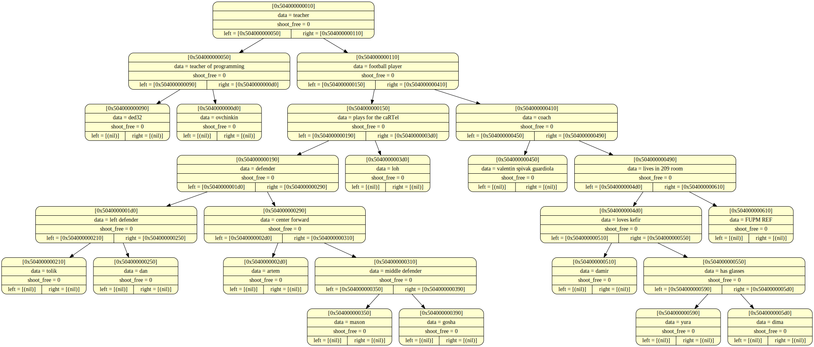
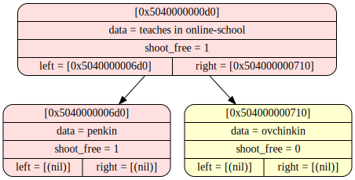
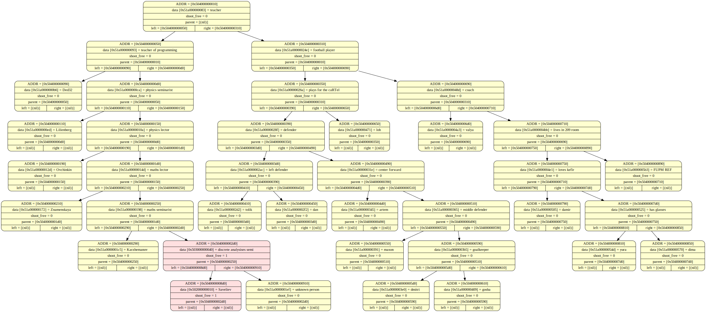

<pre>
<body style="background-color: #AFEEEE"><hr> <h2> before insert </h2> <br> <hr>


<body style="background-color: #AFEEEE"><hr> <h2> adding a node </h2> <br> <hr>


<body style="background-color: #AFEEEE"><hr> <h2> end of programm </h2> <br> <hr>


